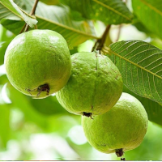
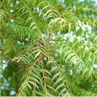
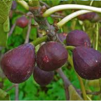
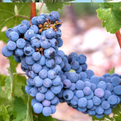
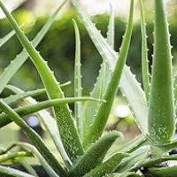

| Guava (Psidium guajava) |
Thrives in full sunlight and warm temperatures, producing nutritious fruits. |
 |
| Drumstick (Moringa oleifera) |
Grows well in sunny conditions; drought-resistant once established. |
 |
| Pomegranate (Punica granatum) |
Requires ample sunlight for fruit production and tolerates dry conditions. |
 |
| Neem (Azadirachta indica) |
A hardy tree that flourishes in full sun and warm climates, known for medicinal benefits. |
 |
| Fig (Ficus carica) |
Prefers sunny areas; produces edible fruit and is resistant to dry conditions. |
 |
| Olive (Olea europaea) |
Grows best in sunny, warm climates; produces olives and is drought-tolerant. |
 |
| Grapes (Vitis vinifera) |
Needs full sunlight to produce fruit; ideal for warmer, sunny regions. |
 |
| Aloe Vera (Aloe barbadensis miller) |
Thrives in bright sunlight; low maintenance and drought-tolerant. |
 |